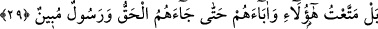
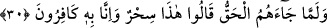

29. Doğrusu bunları da atalarını da kendilerine hak ve onu açıklayan bir
peygamber gelinceye kadar geçindirdim.
“Doğrusu bunları” Mekke ehlinden peygamber devrinde yaşayanları “da, atalarını
da kendilerine hak” yani Kur’an “ve onu” yani tevhidi açık mûcizelerle yahut açık
âyetler ve delillerle “açıklayan bir peygamber gelinceye kadar” uzun ömür ve
nimetler içerisinde “geçindirdim.”
İbrâhim (a.s.)’ın, insanların şirkten tevhîde dönmeleri husûsundaki ümid ve arzusu
gerçekleşmedi. Bilakis ben –azîmuşşân-, Peygamberim’e muâsır olan bu insanları ve
onların babalarını nimetler içinde ömürlerini uzatarak geçindirdim. Onlar bu mühlete
aldanıp şehevâta daldılar. Bunlarla meşgul olup tevhîd kelimesinden uzaklaştılar.
Burada “hattâ” lâfzı, yaşatmanın gâyesi olmayıp bilakis bu yaşatmanın sebep olduğu
aldanma ve onu takip eden hususlardan gâyedir.
30. Fakat kendilerine hak gelince: Bu bir büyüdür, biz onu tanımıyoruz, dediler.
“Fakat kendilerine” içinde bulundukları gafletten onları uyarıp tevhide irşâd edecek
olan “hak gelince” inkâr ve azgınlıkları arttı, eski inkârlarına bir de hakka karşı inat
edip onu küçümsemeyi kattılar da: “Bu” hak ve Kur’an “bir büyüdür,” bâtılı hak
sûretinde göstermektir, “biz onu tanımıyoruz,” onun Allah’ın indinden olduğuna
inanmıyoruz “dediler.” Yani Kur’ân’a büyü deyip onu inkâr ettiler.
Burada din ve hak ehline işâret edilmektedir. Zîrâ nefis, hevâ, bid’at ve sapıklık ehli
olanlar hakka ve hak ehline, büyüye ve büyücüye baktıkları gibi bakarlar. Dilden
söylemeseler de hâl diliyle hak ehline tepki ve inkârlarını ortaya koyarlar.
Bilinmelidir ki elbette küfür, tekzîb ve inkâr cehennem ehlinin sıfatlarındandır. Nasıl
ki cehennem Allah’ın kahır sıfatının mazhar ve tecellîsi ise aynı şekilde söz konusu
sıfatlar da Allah’ın kahrının alâmetlerindendir. Kimde bu sıfatlardan bir kısmı
bulunursa, onun cehenneme girmesini gerektirir. İman, tasdîk ve ikrâr da cennet ehlinin
özelliklerindendir. Nasıl ki cennet Allah’ın lutfunun mazhar ve tecellîsi ise aynı şekilde
söz konusu sıfatlar da Allah’ın lutfunun eserleridir. Kimde bu sıfatlar bulunursa bu
duurm da onun cennete girmesini sağlar.
Ancak tasdik de birkaç kısımdır. Bir kısmı dil ile tasdiktir. Bunda mutî, âsî, havâs,
avâm herkes eşittir. Bu tasdik âhirette faydalı olup buna sahip olan, günahı sebebiyle
cehenneme girse de cehennemde ebedî kalmaz. Diğer bir kısmı ise erkân, tâat, zikir ve
kesin inanç sebepleriyledir. Bu; peygamberler, velîler, sıddîklar ve sâlihlerin tasdîkidir.
Buna sahip olan mutlak olarak bütün âfetlerden kurtulur. Bununla ilgili olarak hadis-i